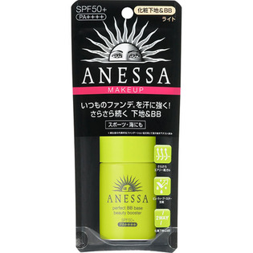
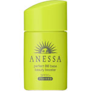

返回列表
产品名称：アネッサ パーフェクト BBベース ビューティーブースター ライト

資生堂 アネッサ パーフェクト BBベース ビューティーブースター ライト －
メーカー 資生堂
JANコード 4901872096862
商品の特徴
SPF50＋ PA＋＋＋＋
いつものファンデを汗に強く！
さらさら続く 下地＆BB
スポーツ・海にも
成分・分量
-
用法及び用量
＜使用方法＞
●2層タイプなので、よく振ってからお使いください。
●朝のスキンケアの最後に、手のひらに適量をとり、顔全体にムラなくていねいになじませます。
●普段お使いのメーク落としで落とせます。
●汗をかいたり、タオルでふいた後などは必要に応じて塗りなおしてください。
●使用量が少ないと、十分な紫外線防御効果が得られません。